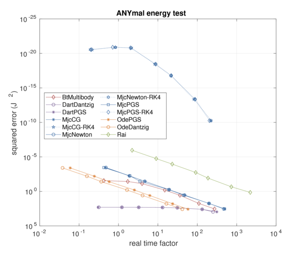
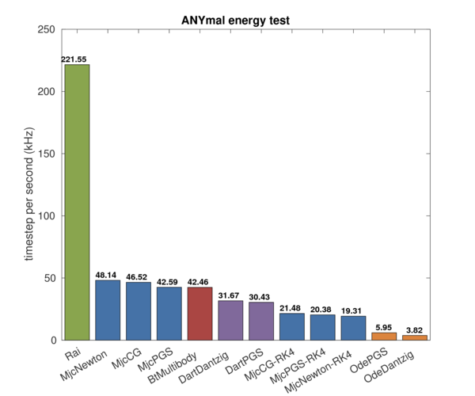

ANYmal energy test

ANYmal free drop test is to test energy conservation.
The test focuses on:
- Energy consesrvation
Test scenario
A 18 DOF quadruped robot ANYmal is lifted up to the sky and then free dropped.
Tested solver list
- Rai
- Bisection solver (Rai solver)
- Bullet
- ODE
- MuJoCo
- PGS solver + Euler integrator
- CG solver + Euler integrator
- Newton solver + Euler integrator
- PGS solver + RK4 integrator
- CG solver + RK4 integrator
- Newton solver + RK4 integrator
- Dart
Results
The results of the test are as following figures.

